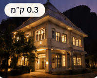
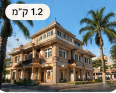
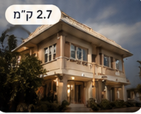
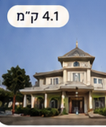
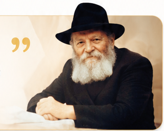
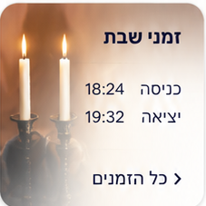
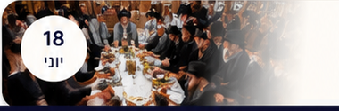

מצא את הבית הקרוב אליך

0.3 ק״מ בית חב״ד צ׳אגי בנגקוק, תאילנד פתוח כעת
1.2 ק״מ בית חב״ד סילום בנגקוק, תאילנד פתוח כעת
2.7 ק״מ בית חב״ד אקמאי בנגקוק, תאילנד נסגר ב- 20:00
4.1 ק״מ חב״ד פאנט בנגקוק, תאילנד פתוח
משפט הרבי היומי ” כל יהודי הוא שליח, וכל מקום שבו הוא נמצא – הוא המקום ממנו יכול ומחוייב להביא את הגאולה. הרבי מלובאוויטש
זמני שבת כניסה18:24 יציאה19:32 כל הזמנים
18יוני התוועדות ג׳ תמוז המרכזית בית חב״ד סילום, בנגקוק יום שלישי | 20:30